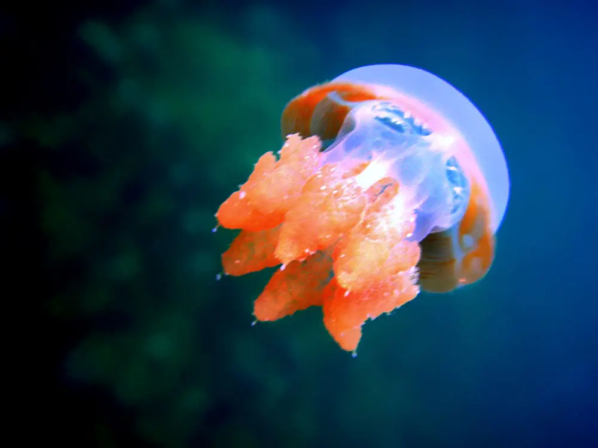

Lac de Kakaban
Archipel de Derawan, Kalimantan, Indonésie · snorkeling, plongée

Lac saumâtre enclavé au cœur d’une île corallienne soulevée, peuplé de méduses qui ont presque perdu leur pouvoir urticant. Autour de l’île, les tombants extérieurs attirent les plongeurs.
- Lieu
- Archipel de Derawan, Kalimantan, Indonésie
- Niveau
- Débutant
- Activités
- snorkeling, plongée
- Type d'eau
- Mer / océan
- Coordonnées
- 2.15, 118.54 (position approximative du secteur)
Dangers à connaître
- Fond vaseux et racines : évite de marcher dans le lac.
- Courants parfois forts sur les tombants extérieurs.
Le conseil d'Ocean Buddy
Nage lentement, sans coups de palmes brusques, et respecte les consignes locales sur la crème solaire pour préserver les méduses du lac.
Ouvrir dans Ocean Buddy Télécharger sur l'App Store
Source : Fiche Ocean Buddy · septembre 2026 · à vérifier localement.